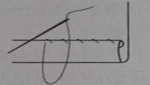
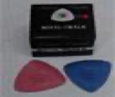
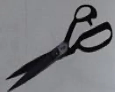
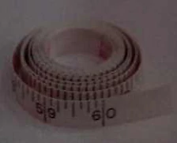

특별한국어능력시험문제(섬유·의복 제조업)
Q. 1. ‘목화’라는 식물에서 채취해서 만든 섬유는?
① 양모
② 마
③ 면
④ 견
Right Ans:- ③ 면
Q. 2. 밭에서 수확한 목화는 재배지에서 씨앗과 섬유를 분리한다. 이 작업은 무엇인가?
① 개면
② 제표
③ 혼면
④ 조면
Right Ans:- ④ 조면
Q. 3. 면섬유가 엉킨 작은 섬유 덩어리로 주로 미성숙하거나 불량한 면에 발생하며, 실의 품질을 저하시키는 것은?
① 넵(nep)
② 미셀(micell)
③ 중공(lumen)
④ 다래(cotton ball)
Right Ans:- ① 넵(nep)
Q. 4. 면섬유의 천연꼬임으로 인해 나타나는 특징을 맞게 설명한 것은?
① 단면 형태가 원형이 된다.
② 중공에 있는 액즙 증발을 막는다.
③ 섬유를 잘 엉키게 하여 방적성을 좋게 한다.
④ 섬유를 유연하게 만든다.
Right Ans:- ③ 섬유를 잘 엉키게 하여 방적성을 좋게 한다.
Q. 5. 양모섬유를 구성하는 단백질이며, 탄소, 수소, 질소 및 황을 함유하고 있는 것은?
① 케라틴(keratine)
②
③
④
Right Ans:- ① 케라틴(keratine)
Q. 6. 천연섬유 중 유일하게 필라멘트 섬유인 것은?
① 면
② 양모
③ 마
④ 견
Right Ans:- ④ 견
Q. 7. 견섬유를 구성하는 주성분 2가지는?
① 피브로인(fibroin), 케라틴(keratine)
② 세리신(sericin), 피브로인(fibroin)
③ 세리신(sericin), 플리스(fleece)
④ 크림프(crimp), 셀룰로오스(cellulose)
Right Ans:- ② 세리신(sericin), 피브로인(fibroin)
Q. 8. 비교적 끓는점이 낮은 방사 용매를 사용하여 방사원액을 사출한 후 뜨거운 공기로 건조시켜 섬유를 만드는 방사방법은?
① 습식방사
② 건식방사
③ 기격습식방사
④ 전기방사
Right Ans:- ② 건식방사
Q. 9.천연섬유 중 동물성 섬유인 것은?
① 면
② 아마
③ 석면
④ 견
Right Ans:- ④ 견
Q. 10. 면섬유의 설명으로 맞지 않는 것은?
① 세탁과 다림질이 쉽고 고온에 강하다.
② 인피섬유, 잎액섬유, 과실섬유로 나뉜다.
③ 화학구조는 글루코오스 단위가 길게 연결된 사슬분자이다.
④ 납작한 리본모양으로 꼬임을 갖게 한다.
Right Ans:- ② 인피섬유, 잎액섬유, 과실섬유로 나뉜다.
Q. 11. 방적사의 원료인 길이가 짧은 섬유를 무엇이라 하는가?
① 스테이플 섬유
② 필라멘트 섬유
③ 셀룰로오스 섬유
④ 재생섬유
Right Ans:- ① 스테이플 섬유
Q. 12. 실의 굵기 표현 방법 중 9,000m 길이의 섬유 무게를 그램(g)으로 나타낸 것은?
① 텍스(tex)
② 미터(meter)
③ 데니어(denier)
④ 리터(liter)
Right Ans:- ③ 데니어(denier)
Q. 13. 연소에 의한 섬유 감별 시 불꽃에 닿는 면이 즉시 타며, 종이 타는 냄새가 나는 섬유에 해당되는 것은 무엇인가?
① 견섬유
② 나일론 섬유
③ 양모섬유
④ 면섬유
Right Ans:- ④ 면섬유
Q. 14. 면섬유의 주성분은 무엇인가?
① 세리신(sericin)
② 셀룰로오스(cellulose)
③ 단백질
④ 아미노산(amino acid)
Right Ans:- ② 셀룰로오스(cellulose)
Q. 15. 섬유 표면에 비늘(scale)의 형상이 관찰되는 섬유는 무엇인가?
① 면섬유
② 양모섬유
③ 견섬유
④ 나일론 섬유
Right Ans:- ② 양모섬유
Q. 16. 면섬유의 화학적 성질에 대한 설명 중 맞지 않는 것은?
① 내열성이 비교적 큰 섬유이다.
② 산에 대해 약하다.
③ 햇빛속의 자외선에 의해 강도가 높아진다.
④ 알칼리에 대해 강한 성질을 가지고 있다.
Right Ans:- ③ 햇빛속의 자외선에 의해 강도가 높아진다.
Q. 17. 인조섬유는 크게 재생섬유, 반합성섬유, 합성섬유로 구분된다. 다음 중 합성섬유가 아닌 것은?
① 스판덱스
② 나일론
③ 비스코스레이온
④ 폴리에스테르
Right Ans:- ③ 비스코스레이온
Q. 18. 3대 합성섬유에 해당되는 것은 무엇인가?
① 스판덱스
② 비스코스레이온
③ 폴리에스테르
④ 폴리에틸렌
Right Ans:- ③ 폴리에스테르
Q. 19. 나일론 섬유의 성질로 맞지 않는 것은?
① 일광견뢰도가 우수하다.
② 벌레나 곰팡이에 대해 안전하다.
③ 마찰강도가 크다.
④ 탄성회복률이 우수하다.
Right Ans:- ① 일광견뢰도가 우수하다.
Q. 20. 마섬유의 특징으로 맞지 않는 것은?
① 신도와 탄성이 좋다.
② 수분의 흡수와 발산이 빠르다.
③ 열의 전도성이 좋다.
④ 구김이 쉽게 생긴다.
Right Ans:- ① 신도와 탄성이 좋다.
Q. 21. 섬유 원료를 방적 공정이나 방사 공정 또는 제사 공정을 통하여 섬유 배열을 평행화 하고, 적당한 꼬임을 주어서 만든 길이가 긴 섬유다발은?
① 실
② 연사
③ 합사
④ 방적사
Right Ans:- ① 실
Q. 22. 무명이나 양털과 같이, 길이가 짧은 섬유를 나란히 간추려서 길게 배열한 다음 그것을 늘여 꼬아 만든 실로서, 표면에는 잔털이 있는 실은 무엇인가?
① 필라멘트사
② 장식사
③ 편연사
④ 방적사
Right Ans:- ④ 방적사
Q. 23. 방적사의 굵기를 나타내는데 사용되며, 표준 무게당의 길이로써 실의 번수를 나타내는 방법은?
① 항장식 번수법
② 항중식 번수법
③ 데니어
④ 텍스
Right Ans:- ② 항중식 번수법
Q. 24. 450m의 필라멘트사가 5g이라 하면 이 실의 데니어 수는?
① 50 데니어
② 100 데니어
③ 150 데니어
④ 200 데니어
Right Ans:- ② 100 데니어
Q. 25. 방적의 방법 중 하나로 덩어리로 된 섬유를 풀어 헤쳐서, 그 속에 있는 잡물을 제거한 다음 섬유를 한 올씩 분리시키는 공정은?
① 드래프팅
② 권취
③ 가연
④ 개섬
Right Ans:- ④ 개섬
Q. 26. 방적의 방법 중 하나로 잡아 늘인 로프 모양의 섬유 집합체에 꼬임을 주어, 섬유를 집속시킴으로써 실로서의 충분한 강력을 가지게 하는 작업은?
① 방사
② 개섬
③ 권취
④ 가연
Right Ans:- ④ 가연
Q. 27. 혼타면 공정의 목적에 해당되지 않는 것은?
① 섬유 뭉치를 풀어 헤친다.
② 잡물을 제거한다.
③ 실을 만든다.
④ 원면을 혼합한다.
Right Ans:- ③ 실을 만든다.
Q. 28. 소면기의 침포사이에 낀 단섬유를 제거해주는 것을 무엇이라 하는가?
① 마침
② 스트리핑(stripping)
③ 그라인딩(grinding)
④ 디태칭(detaching)
Right Ans:- ② 스트리핑(stripping)
Q. 29. 조방공정에서 만들어진 굵은 형태의 실을 무엇이라 하는가?
① 슬라이버(sliver)
② 랩(lap)
③ 로빙(roving)
④ 톱(top)
Right Ans:- ③ 로빙(roving)
Q. 30. 소면공정에서 이루어지는 일이 아닌 것은?
① 섬유 1올씩 분리
② 불순물 제거
③ 꼬임주기
④ 슬라이버 생산
Right Ans:- ③ 꼬임주기
Q. 31. 섬유를 이루는 사슬 분자의 배열과 배향을 잘 해주어서 인장 강도를 높이거나, 신장도를 조절해 주기 위하여 방사 노즐부로부터 압출, 고화된 상태의 섬유에 장력을 주어 끌어당기는 조작은?
① 연신(draw)
② 압출(pressing out)
③ 꼬임(twisting)
④ 카딩(carding)
Right Ans:- ① 연신(draw)
Q. 32. 경사를 직기에 걸어서 여기에 위사를 직각으로 교착시켜 짜는 작업은?
① 편성
② 제직
③ 정경
④ 통경
Right Ans:- ② 제직
Q. 33. 경사 준비공정에 속하지 않는 것은?
① 정경
② 실감기
③ 풀먹이기(가호)
④ 검단
Right Ans:- ④ 검단
Q. 34. 경사 준비공정 중 제직 능력을 향상시키고 직물의 겉모양과 촉감을 개선하기 위하여 날실에 풀액을 침투시켜 흡착하는 공정은?
① 풀먹이기(가호)
② 실감기
③ 틀걸기
④ 정경
Right Ans:- ① 풀먹이기(가호)
Q. 35. 역직기의 종류 중 shuttle loom(북직기)에 속하는 것은?
① 에어젯 직기
② 그리퍼 직기
③ 면직기
④ 워터젯 직기
Right Ans:- ③ 면직기
Q. 36. 가호의 목적에 해당되지 않는 것은?
① 실의 잔털 발생 방지
② 실의 평활성 부여
③ 실의 강신도 증가
④ 실의 색상 부여
Right Ans:- ④ 실의 색상 부여
Q. 37. 가호 공정의 풀 재료에서 점착제 중 천연 풀 재료에 속하지 않는 것은?
① 밀가루
② 점토
③ 아교
④ 녹말
Right Ans:- ② 점토
Q. 38. 일반 면직기에서 크랭크축이 1회전 하는 동안 보텀축의 회전수는?
① 1/2회전
② 1회전
③ 2회전
④ 4회전
Right Ans:- ① 1/2회전
Q. 39. 일반 면직기에서 크랭크축이 4회전하는 동안 몇 올의 위사가 제직되는가?
① 2올
② 3올
③ 4올
④ 5올
Right Ans:- ③ 4올
Q. 40. 경사와 위사를 서로 교착시켜서 직물을 짜는데 필요한 기본적 운동인 직기의 주 운동에 해당되지 않는 것은?
① 권취운동
② 개구운동
③ 북침운동
④ 바디침운동
Right Ans:- ① 권취운동
Q. 41 . 직기의 운동 중 직기 위에 걸려 있는 경사를 위, 아래로 나누어 위사를 넣을 수 있도록 하는 것을 무엇이라 하는가?
① 송출운동
② 개구운동
③ 북침운동
④ 권취운동
Right Ans:- ② 개구운동
Q. 42 . 개구 속에 가로 놓인 씨실을 클로스 펠(cloth fell)까지 밀어 쳐서 직물 조직을 완성 시키는 운동은?
① 개구운동(shedding motion)
② 바디침운동(beating motion)
③ 북침운동(picking motion)
④ 송출운동(let-off motion)
Right Ans:- ② 바디침운동(beating motion)
Q. 43 . 직물 조직을 알기 쉽게 그림으로 나타내기 위하여 쓰이는 일종의 모눈종이를 무엇이라 하는가?
① 도화지(drawing paper)
② 원고지(manuscript paper)
③ 의장지(design paper)
④ 패턴지(pattern paper)
Right Ans:- ③ 의장지(design paper)
Q. 44 . 3원 조직중 경사와 1올씩 서로 교대로 위와 아래로 교착하며 경사와 위사 각각 2올로 완전조직이 구성되는 것은?
① 평조직(plain weave)
② 사문조직(twill weave)
③ 주자조직(satin weave)
④ 변화조직
Right Ans:- ① 평조직(plain weave)
Q. 45 . 사문조직은 경사와 위사를 각각 3올 이상으로 교착시켜 완전조직을 구성하며, 조직점이 빗금 방향으로 연속되어 나타나는 선이 생긴다. 이 선을 무엇이라 하는가?
① 주자선(satin line)
② 능선(twill line)
③ 직선
④ 곡선
Right Ans:- ② 능선(twill line)
Q. 46 . 5매 주자조직의 뜀수는 몇 개인가?
① 1개
② 2개
③ 3개
④ 4개
Right Ans:- ② 2개
Q. 47 . 다음 중 뜀수의 개수가 가장 많은 것은?
① 5매
② 6매
③ 7매
④ 8매
Right Ans:- ③ 7매
Q. 48 . 직물의 폭이 100mm인 직물 견본에서 풀어 낸 위사의 길이가 107mm였다. 이 위사의 직축률(%)은 얼마인가? (소수 둘째 자리에서 반올림)
① 6.0%
② 6.5%
③ 7.0%
④ 7.5%
Right Ans:- ② 6.5%
Q. 49 . 경사와 위사의 밀도 비가 2:1 경우에 사용하는 의장지에 해당되는 것은?
① 16×16
② 8×16
③ 4×8
④ 24×12
Right Ans:- ④ 24×12
Q. 50 . 직기의 보조 장치 중 직물의 가장자리를 보호하고 직물의 폭을 일정하게 잡아주는 장치는?
① 제동장치
② 템플장치
③ 기동장치
④ 경사보호장치
Right Ans:- ② 템플장치
Q. 51 . 다음 중에서 침염에 대한 설명이 아닌 것은?
① 염색액에 섬유를 넣어 같은 색깔로 착색하는 공정이다.
② 섬유에 여러 가지 색상과 무늬를 넣는 공정이다.
③ 섬유의 종류에 따라 염색법이 다르다.
④ 염색액에 섬유를 넣어 일정한 시간동안 열을 가한다.
Right Ans:- ② 섬유에 여러 가지 색상과 무늬를 넣는 공정이다.
Q. 52 . 침염에 사용되는 기계를 염색물의 형태에 따라 나눈 것이 아닌 것은?
① 톱 염색기
② 사 염색기
③ 의류 염색기
④ 빔 염색기
Right Ans:- ④ 빔 염색기
Q. 53 . 다음 중에서 실을 염색하는 방법이 다른 하나는?
① 타래
② 치즈
③ 콘
④ 케이크
Right Ans:- ① 타래
Q. 54 . 원단을 감을 수 있는 2개의 롤러와 원단을 유도해 주는 몇 개의 가이드 롤러로 구성되어, 원단이 확포상태로 정방향과 역방향으로 주행하면서 염색하는 염색기는?
① 윈치 염색기
② 지거 염색기
③ 치즈 염색기
④ 액류 염색기
Right Ans:- ② 지거 염색기
Q. 55 . 다음 중에서 원단을 펼친 상태로 염색하는 염색기가 아닌 것은?
① 지거
② 윈치
③ 빔
④ 패드 롤
Right Ans:- ② 윈치
Q. 56 . 다음 중에서 일반적으로 섬유와 용수의 액비가 가장 낮은 염색기는?
① 지거
② 윈치
③ 빔
④ 액류 염색기
Right Ans:- ① 지거
Q. 57 . 다음 중에서 연속염색이 가능한 염색기가 아닌 것은?
① 패드 스팀
② 서모솔
③ 지거
④ 패드 롤
Right Ans:- ③ 지거
Q. 58 . 다음 중에서 반응성 염료에 의한 염색방법이 아닌 것은?
① 반응성 염료는 섬유와 이온결합 한다.
② 중성염 용액으로부터 섬유내부 표면에 물리적으로 흡착한다.
③ 알칼리 첨가에 의해 염료-섬유의 결합이 진행된다.
④ 반응성 염료의 화학구조는 발색기와 반응기로 나타낼 수 있다.
Right Ans:- ① 반응성 염료는 섬유와 이온결합 한다.
Q. 59 . 다음 중에서 반응성 염료로 면(Cotton)을 염색할 때 사용하지 않는 것은?
① 망초
② 소다회
③ 소핑제
④ 환원제
Right Ans:- ④ 환원제
Q. 60 . 배트 염료는 셀룰로오스 섬유에 염색할 경우 매우 뛰어난 견뢰도를 나타낸다. 물에 녹지않는( )형 구조인 배트 염료는 염색하기에 앞서 환원제와 알칼리를 첨가하여 물에녹는( )염을 만든다. ( )안에 알맞은 것은?
① 분산 – 중성
② 아조 – 무기
③ 퀴논 – 류코
④ 금속 – 알칼리
Right Ans:- ③ 퀴논 – 류코
Q. 61 . 안트라퀴논(Anthraquinone)계 배트 염료의 염색방법 중 가장 낮은 온도에서 염색하는 방법은?
① 일반법(IN 법)
② 온염법(IW 법)
③ 냉염법(IK 법)
④ 특일반법(IN 특별법)
Right Ans:- ③ 냉염법(IK 법)
Q. 62 . 반응성 염료로 면직물을 염색할 때 사용되는 조제와 사용방법이 잘못 연결된 것은?
① 염소산나트륨 - 환원방지제
② 황산나트륨 - 흡착제
③ 탄산나트륨 - 고착제
④ 중크롬산칼륨 – 소핑제
Right Ans:- ④ 중크롬산칼륨 – 소핑제
Q. 63 . 산성기와 염기성기를 동시에 가지고 있어서 처리액의 pH에 따라 음이온 또는 양이온으로 전리되는 섬유는?
① 면
② 나일론
③ 아크릴
④ 양모
Right Ans:- ④ 양모
Q. 64 . 견(silk)섬유의 염색에 대한 내용 중 맞지 않는 것은?
① 산성염료의 견섬유에 대한 친화력은 양모(wool)에 비해 높다.
② 세탁견뢰도는 양모에 비해 낮은 편이다.
③ 고온에서 염색하면 광택이 나빠진다.
④ 산성 염료와 이온결합 한다.
Right Ans:- ① 산성염료의 견섬유에 대한 친화력은 양모(wool)에 비해 높다.
Q. 65 . 나일론(Nylon)섬유 염색 시 염료의 염색성과 사용하는 pH가 맞게 연결된 것은?
① 1:2 금속 착염 염료 - 약산성
② 밀링형 산성 염료 – 중성
③ 균염성 산성 염료 - 약알칼리성
④ 반균염성 산성 염료 – 산성
Right Ans:- ② 밀링형 산성 염료 – 중성
Q. 66 . 균염성 산성염료는 염료가 고농도에서 저농도로 이동하는 성질이 좋아서 나일론 염색에 주로 사용된다. 이러한 성질을 무엇이라고 하나?
① 블로킹(blocking)
② 커버링(covering)
③ 엔딩(ending)
④ 리스팅(listing)
Right Ans:- ② 커버링(covering)
Q. 67 . 나일론 직물 100g을 산성염료를 이용하여 1.5 % o.w.f 의 농도로 액비 1 : 20인 2리터(L)의 물에서 염색하고자 한다. 여기에 사용되는 산성염료의 양은 얼마인가?
① 30g
② 3g
③ 1.5g
④ 15g
Right Ans:- ③ 1.5g
Q. 68 . 폴리에스테르 섬유의 염색에 대한 설명으로 맞지 않는 것은?
① 분산염료로 염색한다.
② 고온고압에서 염색된다.
③ 환원세정은 표면에 부착되어 있는 염료를 제거하기 위한 것이다.
④ 서모솔 염색은 폴리에스테르 섬유의 염색법이 아니다.
Right Ans:- ④ 서모솔 염색은 폴리에스테르 섬유의 염색법이 아니다.
Q. 69 . 섬유염색법 중에서 주로 고온고압에서 염색하므로 화상 또는 압력에 의한 사고 위험이 있으므로, 염색시 가장 주의해야 되는 섬유는?
① 면(cotton)
② 나일론(nylon)
③ 양모(wool)
④ 폴리에스테르(polyester)
Right Ans:- ④ 폴리에스테르(polyester)
Q. 70 . 흰색 또는 옅은 색으로 염색된 원단 위에 직접 날염하는 방법은?
① 본염
② 발염
③ 방염
④ 방발염
Right Ans:- ① 본염
Q. 71 . 염색된 원단에 날염풀을 이용하여 무늬를 찍으면, 무늬가 찍힌 부분의 바탕색이 빠져나가면서 무늬를 나타내는 날염법은?
① 직접 날염
② 발염 날염
③ 방염 날염
④ 착색 방염
Right Ans:- ② 발염 날염
Q. 72 . 다음은 기계식 날염 방법이다. 이중에서 날염방식이 다른 것은?
① 롤러 날염
② 평판 자동 스크린 날염
③ 로터리 스크린 날염
④ 전사 날염
Right Ans:- ④ 전사 날염
Q. 73 . 다음 중 날염공정을 순서대로 나열한 것은?
① 제도-날인-제판-증열-수세-건조-검사
② 제도-제판-증열-날인-건조-수세-검사
③ 제도-제판-날인-증열-수세-건조-검사
④ 제도-날인-증열-제판-건조-수세-검사
Right Ans:- ③ 제도-제판-날인-증열-수세-건조-검사
Q. 74 . 다음 중 제판공정에서 스크린 막을 만들 때 사용되는 약제가 아닌 것은?
① 젤라틴
② 카세인
③ PVA
④ 중크롬산염
Right Ans:- ④ 중크롬산염
Q. 75 . 다음은 제판공정 중 노광(exposure)에 대한 설명이다. 설명이 맞지 않는 것은?
① 감광액을 도포한 스크린을 빛에 노출시키는 작업이다.
② 광원은 청색광이 좋다.
③ 무늬가 많은 경우 노광시간은 짧아야 한다.
④ 빛에 노출된 감광액은 불용화 된다.
Right Ans:- ③ 무늬가 많은 경우 노광시간은 짧아야 한다.
Q. 76 . 제판공정에서 조막제로 사용되는 약제 중 현상 작업시에 미고착된 감광액의 수세 온도가 가장 높은 것은?
① PVA
② 젤라틴
③ 밀크 카세인
④ 디아조 수지
Right Ans:- ① PVA
Q. 77 . 날염용 풀감이 갖추어야 할 조건이 아닌 것은?
① 알맞은 끈기와 굳기를 가지고 있으며, 염료나 조제와의 혼합이 잘 되어야 한다.
② 섬유에 화학변화를 일으키고, 가공 중에 균열이 생기기 않아야 한다.
③ 염료를 섬유에 잘 옮겨주고, 무늬가 번지지 않아야 한다.
④ 물로 씻으면 쉽게 제거되고 풀 자국이 뻣뻣하지 않아야 한다.
Right Ans:- ② 섬유에 화학변화를 일으키고, 가공 중에 균열이 생기기 않아야 한다.
Q. 78 . 다음 중 날염용 색풀에 사용되는 조제와 그 역할이 잘못 연결된 것은?
① 알긴산나트륨(sodium alginate) - 풀감
② 요소(urea) - 흡습제
③ 폴리글리콜(polyglycol) - 염료 용해제
④ 롱가리트(ronglite-c) - 산화제
Right Ans:- ④ 롱가리트(ronglite-c) - 산화제
Q. 79 . 다음 중 날염풀을 만들 때 주의사항으로 맞지 않는 것은?
① 가열과 냉각은 천천히 하여 풀의 물성변화를 방지해야 한다.
② 날염풀의 점도가 높으면 풀감이 스크린의 눈을 막는다.
③ 알긴산나트륨은 60°C 이상으로 가열하면 점성이 올라간다.
④ 염료의 용해가 불충분하면 작은 반점이 나타난다.
Right Ans:- ③ 알긴산나트륨은 60°C 이상으로 가열하면 점성이 올라간다.
Q. 80 . 로터리 스크린 날염기에 사용하는 스퀴즈가 아닌 것은?
① 블레이드 스퀴즈
② 반원형 단면 스퀴즈
③ 에어플로 스퀴즈
④ 롤러 스퀴즈
Right Ans:- ② 반원형 단면 스퀴즈
Q. 81 . 다음의 스크린 인날 방식 중 풀감과 염료가 절감되며, 안료 날염시에 부드러운 촉감을 가질 수 있고 생산속도가 증가되는 스퀴즈 방식은?
① 블레이드 스퀴즈
② 거품 날인 스퀴즈
③ 에어플로 스퀴즈
④ 롤러 스퀴즈
Right Ans:- ② 거품 날인 스퀴즈
Q. 82 . 다른 날염 방식에 비해 섬세한 무늬의 사실적인 날염 제품을 얻을 수 있는 날염방법은?
① 롤라 날염
② 평판 스크린 날염
③ 로타리 스크린 날염
④ 전사 날염
Right Ans:- ④ 전사 날염
Q. 83 . 잉크젯 플로터를 이용하여 원단위에 무늬를 나타내는 날염법은?
① 디지털 날염
② 전사 날염
③ 로터리 스크린 날염
④ 평판 스크린 날염
Right Ans:- ① 디지털 날염
Q. 84 . 날염설비에 대한 설명이 틀리게 연결된 것은?
① 평판 스크린 날염 – 승강운동을 하는 스크린틀과 직물을 부착하는 앤드리스 벨트가 있다.
② 로터리 스크린 날염 – 원통모양의 스크린을 회전시켜 날인한다.
③ 전사 날염 – 종이에 미리 인쇄하여 다시 섬유로 염료 또는 안료를 옮긴다.
④ 디지털 날염 – 고화질의 이미지를 표현할 수 있으나, 너무 느려 생산에 사용할 수 없다.
Right Ans:- ④ 디지털 날염 – 고화질의 이미지를 표현할 수 있으나, 너무 느려 생산에 사용할 수 없다.
Q. 85 . 반응성 염료에 의한 면섬유의 직접 날염법이다. 이 중에서 방식이 다른 것은?
① 증열법
② 플래시 에이지법
③ 알칼리 쇼크법
④ 콜드 픽스법
Right Ans:- ① 증열법
Q. 86 . 직접염료에 의한 면직물의 발염에서 발염제로 사용되지 않는 것은?
① 롱가리트-C
② 아연가루
③ 나프톨 AS
④ 주석염
Right Ans:- ③ 나프톨 AS
Q. 87 . 아조익 염료에 의한 방염에서 방염제로 사용되지 않는 것은?
① 염화제일주석
② 타르타르산
③ 요소
④ 황산알루미늄
Right Ans:- ③ 요소
Q. 88 . 폴리에스테르 섬유의 직접 날염에서 염료 고착법으로 사용되지 않는 것은?
① 증열법
② 환원세정법
③ 건열고착법
④ 캐리어법
Right Ans:- ② 환원세정법
Q. 89 . 폴리에스테르 섬유의 고온 증열용 날염 풀의 처방에 사용되는 조제와 그 용도가 잘못 연결된 것은?
① 유기산 – pH 조절제
② 알긴산나트륨 – 환원 방지제
③ 에틸렌글리콜 – 번짐 방지제
④ 요소 – 흡습제
Right Ans:- ② 알긴산나트륨 – 환원 방지제
Q. 90 . P.V.I(Printing viscosity index)가 0.7인 알긴산나트륨 40 파트와 P.V.I가 0.6인 구아검 60 파트를 혼합하였을 때 혼합한 호의 P.V.I 값은?
① 0.54
② 0.62
③ 0.64
④ 0.67
Right Ans:- ③ 0.64
Q. 91 . 탈수공정은 건조공정에 필요한 열에너지를 절약하기 위한 보조 공정으로 꼭 필요한 공정이다. 탈수방법에 속하지 않는 것은?
① 원심 탈수
② 압착 탈수
③ 진공 탈수
④ 플라즈마 탈수
Right Ans:- ④ 플라즈마 탈수
Q. 92 . 다음 중에서 직물의 폭을 고정시키는 폭출의 기능을 가진 열풍식 건조기는?
① 실린더 건조기
② 텐터
③ 네트 건조기
④ 텀블러 건조기
Right Ans:- ② 텐터
Q. 93 . 건조할 때 장력이 걸리지 않아 직물의 볼륨감을 살려주는 장점이 있어서 만짐새 개선을 위해 많이 사용되는 건조기는? (단점으로 주름이나 털이 일어나기도 한다)
① 편면 실린더 건조기
② 가스식 텐터
③ 네트 건조기
④ 텀블러 건조기
Right Ans:- ④ 텀블러 건조기
Q. 94 . 면직물은 세탁하면 줄어드는 성질을 가진다. 이러한 단점을 해결하기 위해 고무벨트나 부직포 펠트를 이용하여 경사방향으로 강제로 압축시켜, 면직물의 수축을 최대한 제거하는 가공방법은?
① 산포라이징 가공(Sanforizing 가공)
② 머서화 가공(Mercerized 가공)
③ 모소 가공(Mossing 가공)
④ 듀어러블 프레스 가공(Durable press 가공)
Right Ans:- ① 산포라이징 가공(Sanforizing 가공)
Q. 95 . 면의 방염가공제로 사용되지 않는 것은?
① 인산암모늄
② 붕산
③ 수산화나트륨
④ THPC
Right Ans:- ③ 수산화나트륨
Q. 96 . 원단의 표면에 침포를 이용하여 긁어 일으킴으로써 촉감을 부드럽게 하고 보온성을 좋게 하는 가공 방법은?
① 기모 가공
② 브러쉬 가공
③ 샌드 가공
④ 전모 가공
Right Ans:- ① 기모 가공
Q. 97 . 합성섬유는 열 고정을 통해 섬유의 미세구조에 변화를 주게된다.열 고정의 목적이 아닌 것은?
① 치수안정성의 향상
② 형태의 고정
③ 광택의 부여
④ 겉모양의 향상
Right Ans:- ③ 광택의 부여
Q. 98 . 흡습성이 낮은 합성섬유의 친수성을 향상시켜 섬유표면에 정전기가 발생하는 것을 막아주는 가공 방법은?
① 형태 안정 가공
② 대전 방지 가공
③ 유연 가공
④ 방축 가공
Right Ans:- ② 대전 방지 가공
Q. 99 . 섬유에 유연성을 부여하기 위해 유연제를 사용하는데, 다음 중 유연제로 사용되지 않는 것은?
① 오일
② 계면활성제
③ 실리콘 수지
④ 우레탄 수지
Right Ans:- ① 오일
Q. 100 . 폴리에스테르 섬유 192g의 완전분해에 필요한 수산화나트륨의 양은 80g이다. 이론적으로 원단 1kg을 20% 감량하는데 필요한 수산화나트륨의 양은 얼마인가?
① 83.3g
② 8.3g
③ 17.3g
④ 173.6g
Right Ans:- ① 83.3g
Q. 101. 다음 중 가장 튼튼한 바느질 방법은?
① 가름솔
② 홑솔
③ 쌈솔
④ 뉨솔
Right Ans:- ③ 쌈솔
Q. 102. 재봉기 바늘 중 바늘의 굵기가 가는 것부터 굵은 순서대로 나열한 것은?
① 14호 → 11호 → 9호 → 8호
② 8호 → 9호 → 11호 → 14호
③ 14호 → 9호 → 11호 → 8호
④ 9호 → 11호 → 14호 → 8호
Right Ans:- ② 8호 → 9호 → 11호 → 14호
Q. 103. 제도에서 사용되는 부호 중 다음 그림의 명칭은?
------------------
① 기초선
② 완성선
③ 안단선
④ 꺾임선
Right Ans:- ④ 꺾임선
Q. 104. 재봉기의 구조 중 옷감을 미끄럼판 위에 고정시키고 톱니의 움직임에 따라 옷감이 함께 움직일 수 있을 만큼의 압력으로 옷감을 눌러 주는 것은?
① 실가이드
② 노루발
③ 바늘
④ 북과 북집
Right Ans:- ② 노루발
Q. 105. 밑실이 끊어지는 원인은?
① 북에 결함이 있다.
② 보내기 기구에 결함이 있다.
③ 실 안내에 결함이 있다.
④ 실채기 스프링에 결함이 있다.
Right Ans:- ① 북에 결함이 있다.
Q. 106. 시접을 예쁘게 장식할 때 사용되며 겉으로 실이 나타나지 않게 하는 바느질 방법은?
① 새발뜨기
② 공그르기
③ 휘감치기
④ 반박음질
Right Ans:- ① 새발뜨기
Q. 107. 옷을 만들 때 필요한 치수로 유두를 지나 가슴을 수평으로 재는 것은 무엇인가?
① 허리둘레
② 엉덩이둘레
③ 가슴둘레
④ 바지길이
Right Ans:- ③ 가슴둘레
Q. 108. 재봉기 윗실을 걸 때 마지막에 실을 끼우는 곳은?
① 실채기
② 바늘
③ 북
④ 실조절기
Right Ans:- ② 바늘
Q. 109. 바느질할 때 천의 종류에 따라 강약의 압력을 주는 것은?
① 바늘
② 압력조절기
③ 노루발
④ 바늘대
Right Ans:- ② 압력조절기
Q. 110. 재봉틀 임시 분해 청소에 관해 맞는 것은?
① 1주 1회
② 매일
③ 15일에 1회
④ 1개월에 1회
Right Ans:- ① 1주 1회
Q. 111. 기계의 회전음이 요란하거나 사용이 무거운 원인이 아닌 것은?
① 기름이 없을 때
② 북가마에 먼지가 끼었을 때
③ 나사가 헐거울 때
④ 바늘보다 실이 가늘 때
Right Ans:-
Q. 112. 재봉틀 바늘이 잘 부러지는 원인은?
① 침판의 침통이 너무 넓다.
② 윗실이 너무 강하다.
③ 천에 풀기가 너무 세다.
④ 바늘대가 휘었거나 북통을 잘못 끼웠다.
Right Ans:- ④ 바늘대가 휘었거나 북통을 잘못 끼웠다.
Q. 113. 바늘이 부러지는 원인이 아닌 것은?
① 옷감이 두꺼울 때
② 바늘이 나쁘거나 굽었을 때
③ 감을 무리하게 당길 때
④ 바늘의 호수가 맞을 때
Right Ans:- ④ 바늘의 호수가 맞을 때
Q. 114. 재봉바늘의 호수에 대한 설명으로 맞는 것은 무엇인가?
① 숫자가 클수록 바늘이 굵어진다.
② 숫자가 클수록 바늘이 가늘어진다.
③ 숫자가 작을수록 바늘이 굵어진다.
④ 숫자와 상관없다.
Right Ans:- ① 숫자가 클수록 바늘이 굵어진다.
Q. 115. 바늘을 점검하려고 한다. 가장 적당한 것은?
① 끝이 무디고 휘어지지 않았는지 살펴본다.
② 바늘이 좋은 것인지 나쁜 것인지 살펴본다.
③ 천이 박혀지는 바늘인가 살펴본다.
④ 바늘의 상표를 살펴본다.
Right Ans:- ① 끝이 무디고 휘어지지 않았는지 살펴본다.
Q. 116. 두꺼운 겨울 동복지에 일반적으로 많이 사용하는 재봉바늘 호수는?
① 7번
② 9번
③ 11번
④ 14번
Right Ans:- ④ 14번
Q. 117. 시접분량이 가장 적은 것은?
① 목둘레
② 옆선
③ 어깨
④ 스커트단
Right Ans:- ① 목둘레
Q. 118. 시침바느질에 사용하는 실은?
① 면사
② 견사
③ 나일론사
④ 폴리에스테르사
Right Ans:- ① 면사
Q. 119. 옷감을 봉제할 때 가장 적절한 재봉기는?
① 지그재그봉
② 본봉
③ 이중환봉
④ 편평봉
Right Ans:- ② 본봉
Q. 120. 스커트 제도에서 가장 중요한 항목은?
① 엉덩이둘레
② 허리둘레
③ 스커트길이
④ 엉덩이길이
Right Ans:- ① 엉덩이둘레
Q. 121. 그레이딩(grading) 정의를 맞게 설명한 것은 무엇인가?
① 디자인 종류를 부분별로 구별하는 작업
② 재단작업에서 봉제작업으로 이동하는 작업
③ 심플화, 불량품을 분리하는 작업
④ 사이즈별 치수를 조절하는 작업
Right Ans:- ④ 사이즈별 치수를 조절하는 작업
Q. 122. 다음 중 옷을 만드는 일반적인 과정에서 가장 먼저 해야 하는 것은?
① 치수설정
② 의복설계
③ 패턴제작
④ 재단
Right Ans:- ① 치수설정
Q. 123. 재봉기에서 주어진 땀 길이에 맞게 천을 앞으로 밀어주는 역할을 하는 것은?
① 노루발
② 침판
③ 톱니
④ 실채기
Right Ans:- ③ 톱니
Q. 124. 다음 재봉기 바늘 중 가장 굵은 것은?
① 9번
② 11번
③ 12번
④ 14번
Right Ans:- ④ 14번
Q. 125. 다음 중에서 스커트 제도에 가장 필요 없는 치수는?
① 허리둘레
② 엉덩이둘레
③ 엉덩이길이
④ 밑위길이
Right Ans:- ④ 밑위길이
Q. 126. 올의 풀림을 방지하고 어깨와 소매를 이을 때 완전하게 감침질되는 능률적인 재봉기는?
① 인터로크
② 단추달이
③ 본봉
④ 두줄스티치
Right Ans:- ① 인터로크
Q. 127. 재봉바늘 호수는 무엇을 뜻하는가?
① 바늘 강도
② 길이
③ 바늘 굵기
④ 바늘 종류
Right Ans:- ③ 바늘 굵기
Q. 128. 재봉틀을 사용하여 두 장의 천을 합하는 방법은?
① 마킹
② 연단
③ 재단
④ 봉제
Right Ans:- ④ 봉제
Q. 129. 패턴 배치 방법 중 맞는 것은?
① 패턴은 작은 것부터 배치한다.
② 옷감의 겉면이 밖으로 되도록 반 접는다.
③ 짧은 털이 있는 옷감은 털의 결방향이 위로 가게 한다.
④ 긴 털이 있는 옷감은 털의 결방향이 위로 가게 한다.
Right Ans:- ③ 짧은 털이 있는 옷감은 털의 결방향이 위로 가게 한다.
Q. 130. 다음 그림은 손바느질 방법 중 어떤 것인가?

① 감침질
② 박음질
③ 홈질
④ 새발뜨기
Right Ans:- ① 감침질
Q. 131. 실크블라우스를 재봉할 때 알맞은 바늘호수는?
① 9번
② 14번
③ 16번
④ 18번
Right Ans:- ① 9번
Q. 132. 흰색의 면직물로 블라우스를 재단할 때 어떤 방법의 표시가 가장 좋은가?
① 실표 뜨기 표시
② 뼈인두 표시
③ 초크 표시
④ 룰렛표시
Right Ans:- ① 실표 뜨기 표시
Q. 133. 소매산이 높을 때 소매통의 변화는?
① 소매산에 관계없이 소매통은 항상 일정하다.
② 소매통은 좁아진다.
③ 소매통은 넓어진다.
④ 소매길이가 짧아진다.
Right Ans:- ② 소매통은 좁아진다.
Q. 134. 블라우스의 소매산이 높으면 어떻게 되는가?
① 활동하기에 불편하다.
② 바느질하기가 불편하다.
③ 소매가 길어진다.
④ 활동하기 편하다.
Right Ans:- ① 활동하기에 불편하다.
Q. 135. 바느질 모양이 다음 그림처럼 나타나는 것은?
----------------
① 감침질
② 박음질
③ 홈질
④ 새발뜨기
Right Ans:- ③ 홈질
Q. 136. 시침실을 사용하며 두 장의 직물에 패턴의 완성선을 표시할 때 사용되는 손바느질 방법은?
① 휘감치기
② 실표 뜨기
③ 새발뜨기
④ 어슷시침
Right Ans:- ② 실표 뜨기
Q. 137. 손으로 하는 대표적인 바느질법으로 두 장을 잇거나 주름을 만들 때 많이 사용되는 손바느질 방법은?
① 홈질
② 박음질
③ 감침질
④ 실표 뜨기
Right Ans:- ① 홈질
Q. 138. 다음은 재봉기에서 무엇을 말하는 것인가?
| 표면이 미끄럽게 되어 있어 옷감이 노루발 밑으로 쉽게 미끄러져 들어가게 하는 역할을 하며, 북과 북집을 넣을 수 있도록 열리고 닫히는 입구가 있다 |
① 노루발
② 톱니
③ 압력조절기
④ 미끄럼판
Right Ans:- ④ 미끄럼판
Q. 139. 두꺼운 옷감 시접 솔기 처리방법은?
① 가름솔
② 통솔
③ 쌈솔
④ 뉨솔
Right Ans:- ① 가름솔
Q. 140. 옷을 만들 때 필요한 치수로 허리의 가장 가는 곳을 줄자로 재는 것은?
① 허리둘레
② 엉덩이둘레
③ 가슴둘레
④ 바지 길이
Right Ans:- ① 허리둘레
Q. 141 . 천을 평평하게 가지런히 펼쳐 포개어 주는 것으로 재단하기 전에 하는 작업은?
① 마킹
② 연단
③ 재단
④ 봉제
Right Ans:- ② 연단
Q. 142 . 천이나 마커종이에 재단선을 표시하는 것을 무엇이라 하는가?
① 마킹
② 연단
③ 재단
④ 봉제
Right Ans:- ① 마킹
Q. 143 . 재단선을 따라 천을 자르는 작업을 무엇이라 하는가?
① 마킹
② 연단
③ 재단
④ 봉제
Right Ans:- ③ 재단
Q. 144 . 옷을 만들 때 필요한 치수로 줄자를 이용해서 엉덩이의 제일 굵은 부분을 수평 으로 재는 것은 무엇인가?
① 허리둘레
② 엉덩이둘레
③ 가슴둘레
④ 바지 길이
Right Ans:- ② 엉덩이둘레
Q. 145 . 바지길이 90cm인 긴바지를 만들려고 한다. 110cm폭 원단의 옷감은 얼마나 필요한가?
① 100~110cm
② 150~160cm
③ 200~220cm
④ 250~260cm
Right Ans:- ③ 200~220cm
Q. 146 . 손바느질할 때 쉬폰과 같이 아주 얇은 견(실크)은 바늘의 굵기를 나타내는 호수는?
① 2,3호
② 4,5호
③ 6호
④ 8호
Right Ans:- ④ 8호
Q. 147 . 손바느질할 때 아주 두꺼운 골덴, 개버딘 옷감에 사용하는 바늘의 호수는?
① 2,3호
② 4,5호
③ 6호
④ 8호
Right Ans:- ① 2,3호
Q. 148 . 다음 그림은 패턴을 원단에 표시할 때 사용하는 것으로 무엇인가?

① 초크(chalk)
② 다리미
③ 재단주걱
④ 룰렛
Right Ans:- ① 초크(chalk)
Q. 149 . 다음 그림은 재단 용구로 천을 재단할 때 사용하며, 종이를 자르는 제도용 가위와 구별하여 사용하는 것으로 무엇인가?

① 재단가위
② 핑킹가위
③ 쪽가위
④ 래퍼
Right Ans:- ① 재단가위
Q. 150 . 다음 그림은 계측용구 중 피부의 표면을 측정하는 도구로써 둘레나 길이를 측정하는데 사용하는 것이다. 무엇인가?

① 줄자
② 곡자
③ 축도자
④ 방안자
Right Ans:- ① 줄자
Q. 151 . 폴리에스테르 섬유는 보통 130도의 고온고압에서 염색을 진행한다. 다음 중 폴리 에스테르 섬유의 염색온도를 100도 정도로 낮추는 역할을 하는 조제는 어느 것인가?
① 분산제
② 캐리어
③ 균염제
④ 촉염제
Right Ans:- ② 캐리어
Q. 152 . 면섬유를 산화제에 의해 표백할 때 경도가 높은 용수를 사용하면 발생하는 문제는 어느 것인가?
① 노랗게 변색된다.
② 광택이 난다.
③ 구멍이 발생한다.
④ 강도가 향상된다.
Right Ans:- ③ 구멍이 발생한다.
Q. 153 . 옷을 만들 때 필요한 치수로써 줄자를 이용해서 허리 옆 둘레선에서부터 발목 까지 재는 것은?
① 허리둘레
② 엉덩이둘레
③ 바지길이
④ 가슴둘레
Right Ans:- ③ 바지길이
Q. 154 . 다음의 경편성 제품의 조직 중 가장 많이 사용되는 것은?
① 트리코트(Tricot)
② 밀라네스(Milanese)
③ 자카드(Jacquard)
④ 랏셀(Raschel)
Right Ans:- ① 트리코트(Tricot)
Q. 155 . 편성물의 분해에서 조사하여야 할 항목이 아닌 것은?
① 편포의 판매가
② 편포의 조직
③ 편포의 종류
④ 편포의 무게와 폭
Right Ans:- ① 편포의 판매가
Q. 156 . 편성물은 고리(loop)구조로 이루어진다. 다음 중 편성물에서 고리의 1인치 내의 개수를 나타내는 용어는?
① 코(wale)
② 터크(tuck)
③ 도목(stich length)
④ 밀도(stich density)
Right Ans:- ④ 밀도(stich density)
Q. 157 . 어느 편성물의 고리(loop)구조에서 풀어낸 실의 길이는 100cm이다. 이 편성물의 코는 20, 단은 25일 때 이 편성물의 편환장은 얼마인가?
① 5
② 50
③ 4
④ 40
Right Ans:- ② 50
Q. 158 . 동일한 원사를 사용하는 경우 다음의 조직 중에서 편환장이 가장 긴 것은?
① 평편(plain)
② 1×1 리브편(rib)
③ 2×2 리브편(rib)
④ 양면편( interrock)
Right Ans:- ③ 2×2 리브편(rib)
Q. 159 . 다음 중 편성기가 아닌 것은?
① 환편기
② 수직기
③ 라셀기
④ 양두기
Right Ans:- ② 수직기
Q. 160 . 다음 중 가장 높은 밀도의 조직을 편성할 수 있는 편기는?
① 12 게이지
② 18 게이지
③ 24 게이지
④ 32 게이지
Right Ans:- ④ 32 게이지
Q. 161 . 다음에서 24게이지 편기보다 2배 치밀한 조직을 편성할 수 있는 게이지는?
① 12 게이지
② 32 게이지
③ 48 게이지
④ 60 게이지
Right Ans:- ③ 48 게이지
Q. 162 . 100피더를 가진 편성기가 1초 당 0.5의 회전으로 편성한다고 할 때 이 조건에서 해당 편기의 생산효율은 얼마인가?
① 50
② 3,000
③ 2,000
④ 200
Right Ans:- ② 3,000
Q. 163 . 편기에는 여러 가지의 바늘이 사용되고 있는데, 가장 많이 사용되는 바늘구조는 어느 것인가?
① 비어드 편침
② 복합 편침
③ 양두 편침
④ 래치 편침
Right Ans:- ④ 래치 편침
Q. 164 . 편성물은 다음 어느 조직의 연속구조로 이루어지는가?
① 사각형구조
② 벌집형구조
③ 고리형구조
④ 원형구조
Right Ans:- ③ 고리형구조
Q. 165 . 편성물에 사용하는 원사로 적합하지 않은 것은?
① 굵기나 꼬임수가 균일하다.
② 수축 특성이 작다.
③ 강도와 신도가 크다.
④ 표면에 잔털이 많다.
Right Ans:- ④ 표면에 잔털이 많다.
Q. 166 . 다음 중 일반적인 편성물의 장점이 아닌 것은?
① 잘 늘어나지 않는다.
② 함기성이 크다.
③ 유연하다.
④ 신축성이 있다.
Right Ans:- ① 잘 늘어나지 않는다.
Q. 167 . 다음 중 일반적인 편성물의 단점은?
① 감촉이 좋다.
② 구김이 없다.
③ 올이 잘 풀어진다.
④ 보온성이 좋다.
Right Ans:- ③ 올이 잘 풀어진다.
Q. 168 . 편성물의 길이방향의 조직을 무엇이라고 하나?
① 단(course)
② 경사(warp)
③ 코(wale)
④ 위사(weft)
Right Ans:- ③ 코(wale)
Q. 169 . 위편성물 기본조직 중 앞면과 뒷면 조직의 표면상태가 가장 다른 것은?
① 평편(plain)
② 펄편(purl)
③ 리브편(rib)
④ 스카시편(skashi)
Right Ans:- ① 평편(plain)
Q. 170 . 편성물을 착용 후 물세탁 시 주의해야 할 사항이 아닌 것은?
① 강하게 비벼 빨지 않는다.
② 햇빛에서 빨리 건조한다.
③ 기계탈수는 저속에서 한다.
④ 가급적 손세탁을 한다.
Right Ans:- ② 햇빛에서 빨리 건조한다.
Q. 171 . 다음 중 정경공정이 필요 없는 편성물은 어느 것인가?
① 환편물
② 트리코트편물
③ 라셀편물
④ 밀라니스편물
Right Ans:- ① 환편물
Q. 172 . 편성공정에서 편침이 가장 높은 위치에 올라가 고리를 구성하는 편성위치를 무엇이라고 하나?
① 턱(tuck)
② 가이드(guide)
③ 미스(miss)
④ 니트(knit)
Right Ans:- ④ 니트(knit)
Q. 173 . 편성 제품 중에서 특정한 어느 조직에서는 가장자리가 휘감기는 성질이 있어 염색가공 및 봉제 공정에 불편한 점이 있다. 이러한 현상을 무엇이라고 하는가?
① curl-up
② drape
③ run
④ sang
Right Ans:- ① curl-up
Q. 174 . 염색은 염료나 안료 등을 사용하여 섬유 등의 피염물을 착색시키는 공정이다. 다음 중 실용적인 염색이라고 볼 수 없는 것은?
① 착색이 균일한 것
② 착색의 색상이 다양한 것
③ 착색이 용이할 것
④ 착색이 견고할 것
Right Ans:- ③ 착색이 용이할 것
Q. 175 . 염색공정에서는 대부분의 경우 3가지 색상의 혼합에 의해 색을 발현시킨다. 다음 중 3가지 색상이 아닌 것은?
① 화이트(white)
② 마젠타(magenta)
③ 시안(cyan)
④ 노랑(yellow)
Right Ans:- ① 화이트(white)
Q. 176 . 시안(cyan)과 노랑(yellow)을 혼합하면 무슨 색상이 되는가?
① 주황(orange)
② 녹색(green)
③ 보라(pupple)
④ 분홍(pink)
Right Ans:- ② 녹색(green)
Q. 177 . 빨강, 노랑, 파랑 등으로 구분하며, 색자체가 가지고 있는 고유한 특성을 무엇이라고 하는가?
① 명도(value)
② 채도(chroma)
③ 보색(complementary color)
④ 색상(hue)
Right Ans:- ④ 색상(hue)
Q. 178 . 다음 중 염색용수로 부적합한 것은 어느 것인가?
① 탁도가 0.3ppm 이하인 것
② pH가 7.0인것
③ 경도가 20ppm 인 것
④ Fe, Mg가 10ppm인 것
Right Ans:- ④ Fe, Mg가 10ppm인 것
Q. 179 . 섬유제품 정련공정의 목적이 아닌 것은?
① 섬유 중의 불순물을 제거한다.
② 염색공정에서 색의 선명도를 향상시킨다.
③ 섬유를 하얗게 한다.
④ 염색공정에서 얼룩 등의 문제가 발생하지 않게 한다.
Right Ans:- ③ 섬유를 하얗게 한다.
Q. 180 . 섬유제품 표백공정의 목적이 아닌 것은?
① 백색제품으로의 가치를 높인다.
② 원단의 촉감을 부드럽게 한다.
③ 선명한 색상으로 염색하기 위해 착색물질을 제거한다.
④ 정련공정에서 제거되지 않은 불순물을 제거한다.
Right Ans:- ② 원단의 촉감을 부드럽게 한다.
Q. 181 . 섬유제품의 전처리 공정에 속하지 않는 것은 어느 것인가?
① 정련공정
② 표백공정
③ 풀빼기공정
④ 기모공정
Right Ans:- ④ 기모공정
Q. 182 . 다음의 섬유 중에서 특별한 경우가 아니면 별도의 표백공정이 필요 없는 것은?
① 면
② 양모
③ 마
④ 폴리에스테르
Right Ans:- ④ 폴리에스테르
Q. 183 . 다음의 면섬유의 전처리 공정의 조합에서 실용적으로 조합이 이루어진 것은?
① 풀빼기-표백-정련
② 풀빼기-정련-표백
③ 정련-풀빼기-표백
④ 정련-표백-풀빼기
Right Ans:- ② 풀빼기-정련-표백
Q. 184 . 다음 중 pH 9.0 미만의 약한 알칼리에서 제거되는 호제는 어느 것인가?
① 전분호제
② CMC호제
③ 아크릴호제
④ PES호제
Right Ans:- ④ PES호제
Q. 185 . 면섬유의 표백에 사용하는 약품으로 실용적으로 가장 많이 사용하는 표백제는?
① 과산화수소(H2O2)
② 차아염소산나트륨(NaclO)
③ 아염소산트륨(NaclO2)
④ 가성소다(NaOH)
Right Ans:- ① 과산화수소(H2O2)
Q. 186 . 면섬유의 풀빼기 공정에 사용하는 산화호발제가 아닌 것은?
① 아밀라제
② 과산화수소
③ 아브론산염
④ 과황산염
Right Ans:- ① 아밀라제
Q. 187 . 효소정련법의 장점이 아닌 것은?
① 친환경적인 처리방법이다.
② 비교적 고온에서 처리한다.
③ 수축, 구김 등의 방지에도 효과가 있다.
④ 산이나 알칼리에 약한 원사에 효율적이다.
Right Ans:- ② 비교적 고온에서 처리한다.
Q. 188 . 섬유제품의 표백방법이 아닌 것은?
① 산화표백
② 환원표백
③ 이온표백
④ 형광표백
Right Ans:- ③ 이온표백
Q. 189 . 섬유제품의 정련표백 설비 중 염색기로는 활용할 수 없는 것은?
① 윈치(winch)
② J-Box
③ 고압액류기
④ 지거(jugger)
Right Ans:- ② J-Box
Q. 190 . 섬유제품의 정련표백 설비 중 연속설비의 장점이 아닌 것은?
① 균일한 품질
② 양호한 재현성
③ 생산능률의 향상
④ 다품종 소량생산 방식에 적합
Right Ans:- ④ 다품종 소량생산 방식에 적합
Q. 191 . 섬유제품의 정련표백 공정 중에서 영향을 미치는 요소가 가장 적은 것은?
① 처리설비 담당자
② 사용하는 약품의 종류와 수량
③ 처리 온도와 처리 시간
④ 처리 설비
Right Ans:- ① 처리설비 담당자
Q. 192 . 면섬유의 정련표백 설비 중 비연속식에서 가장 널리 사용되는 설비는?
① CPB
② High Rotary Washer
③ 윈치(winch)
④ 고압액류정련기
Right Ans:- ③ 윈치(winch)
Q. 193 . 고온, 고압의 정련기가 필요한 섬유는?
① 면
② 폴리에스테르
③ 아크릴
④ 레이온
Right Ans:- ② 폴리에스테르
Q. 194 . 다음의 염료 중 물에 녹는 염료가 아닌 것은?
① 직접염료
② 분산염료
③ 반응성염료
④ 산성염료
Right Ans:- ② 분산염료
Q. 195 . 다음의 원사소재-염료 쌍 중에서 가장 낮은 온도에서 진행하는 것은?
① 면-직접염료
② 나일론-산성염료
③ 면-반응성염료
④ 아크릴-양이온염료
Right Ans:- ③ 면-반응성염료
Q. 196 . 다음 중 면섬유의 염색에 사용되지 않는 염료는?
① 반응성염료
② 배트염료
③ 산성염료
④ 직접염료
Right Ans:- ③ 산성염료
Q. 197 . 반응성 염료를 사용하여 면섬유에 염색하고자 할 때 염료의 구비요건이 아닌 것은 ?
① 알칼리에 안정적일 것
② 고착율이 높을 것
③ 견뢰도가 양호할 것
④ 열에 대한 예민성이 클 것
Right Ans:- ④ 열에 대한 예민성이 클 것
Q. 198 . 분산염료를 사용하여 염색하지 않는 섬유는?
① 폴리에스터 섬유
② 아세테이트 섬유
③ 누에고치 섬유
④ 트리아세테이트 섬유
Right Ans:- ③ 누에고치 섬유
Q. 199 . 산성염료를 사용하여 나일론 섬유를 연한 상아색(ivory)으로 염색하려 한다. 적합한 염료는다음중 어느것인가?
① 고에너지 type
② 밀링(millimg) type
③ 하프밀링(half milling) type
④ 레벨링(levelling) type
Right Ans:- ④ 레벨링(levelling) type
Q. 200 . 염색공정에서 조제로 사용하는 계면활성제의 특성이 아닌 것은?
① 용해성
② 유화성
③ 흡착성
④ 안/알칼리 안정성
Right Ans:- ① 용해성